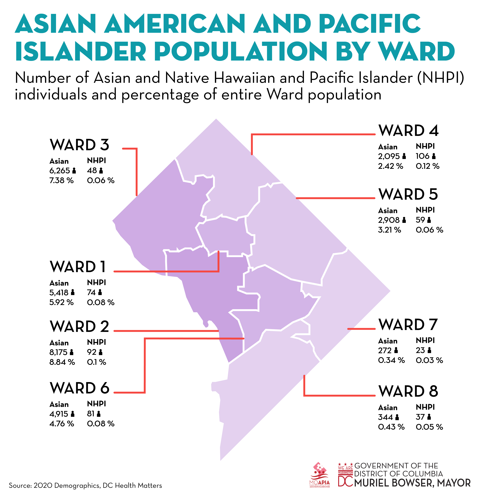
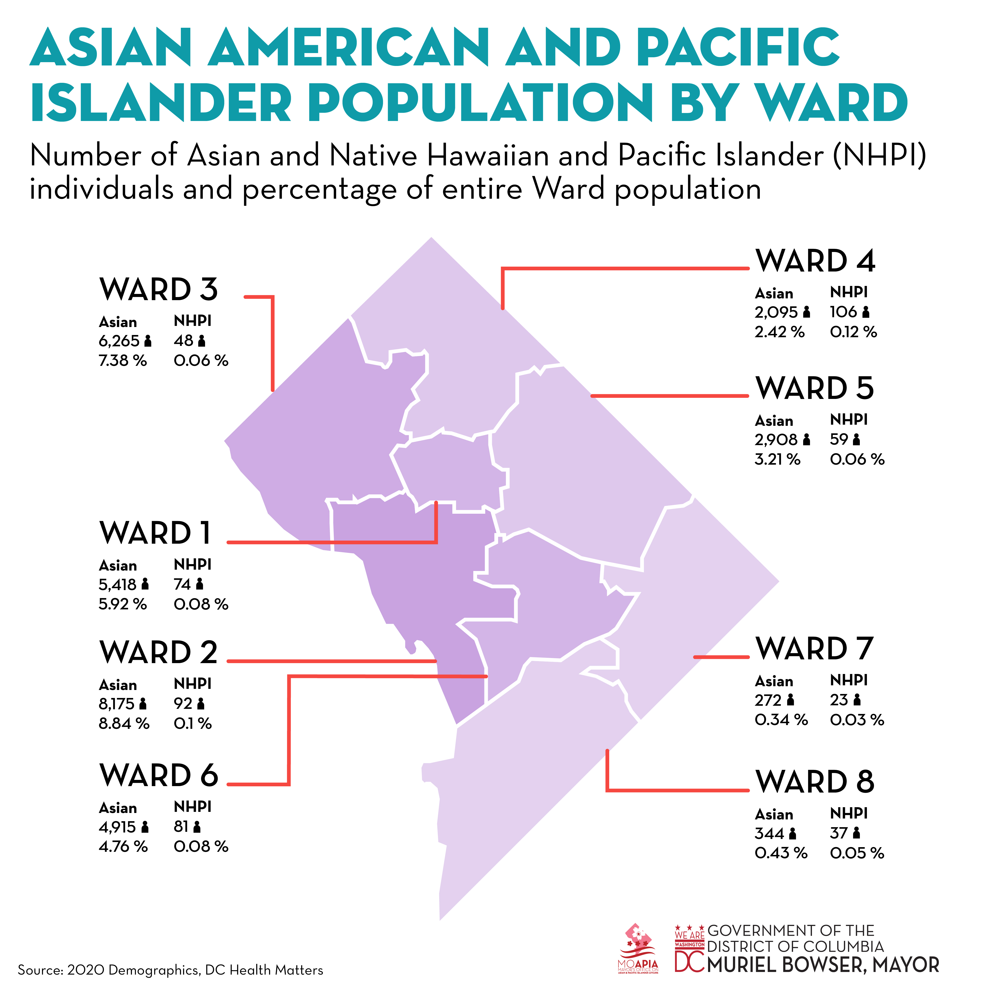

AAPI Population Infographics
Mayor's Office on Asian and Pacific Islander Affairs
Objective: Create two graphics about DC's AAPI population: a map of the AAPI population by ward and an infographic demonstrating demographic, employment, education, and language data, for internal use within the Mayor's Office.
Deliverables: PDF, JPEGs
Process: Vectorize map, create charts using graph tool and pen tool, layout, creating and adding decorative icons.
Tools: Adobe Illustrator
![Asian American and Pacific Islander (AAPI) Population: 37,874 (36, 659 Asian Americans + 1,215 Native Hawaiians and Pacific Islanders), about 5.4% of the entire DC population.
Ethnicity of the District’s Asian American population:
Asian Indian – 28.4 %
Chinese – 24.5 %
Filipino – 11.4 %
Korean – 11.5 %
Japanese – 4.3 %
Vietnamese – 8 %
Other Asian – 11.5 %
Ethnicity of the District’s Native Hawaiian and Pacific Islander population:
Native Hawaiian – 39.3 %
Samoan - 9.5 %
Guamanian or Chamorro – 25 %
Other Pacific Islander - 26%
Foreign born: 13.7 % of the District’s population are foreign born. Of the District’s foreign born population, 21.5 % were born in Asia.
Language proficiency:
2.3% of the District’s population speaks Asian and Pacific Islander languages at home.
23 % of the District’s AAPI population is Limited English/Non English Proficient (LEP/NEP).
The LEP/NEP percentage within the Asian American population:
Chinese: 35.8 %
Korean: 22.7 %
Vietnamese: 53.3%
Education attainment:
Less than high school graduate: 5 %
High school graduate: 5.1 %
Some college or associate’s degree: 7.8 %
Bachelor’s degree or higher: 81.9 %
Employment status
In labor force: 75.4 %
Unemployed: 2.2 %
Median age: 33.5
Gender:
Male: 48.3 %
Female: 51.7%](img/aapi-population.jpg) 
